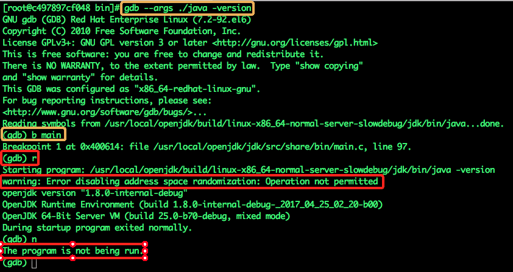
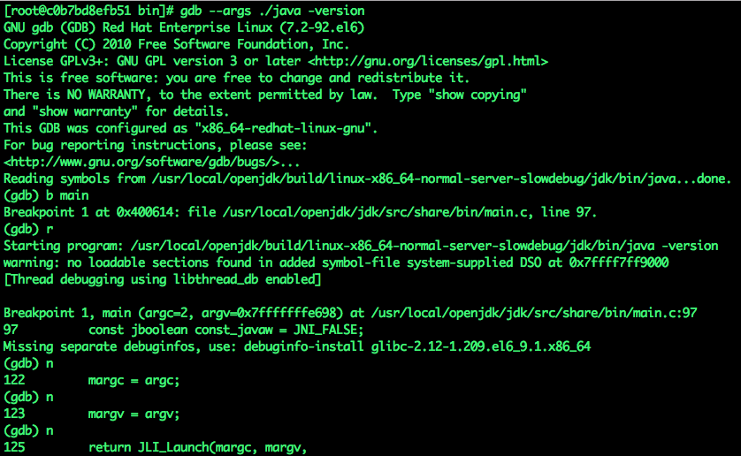
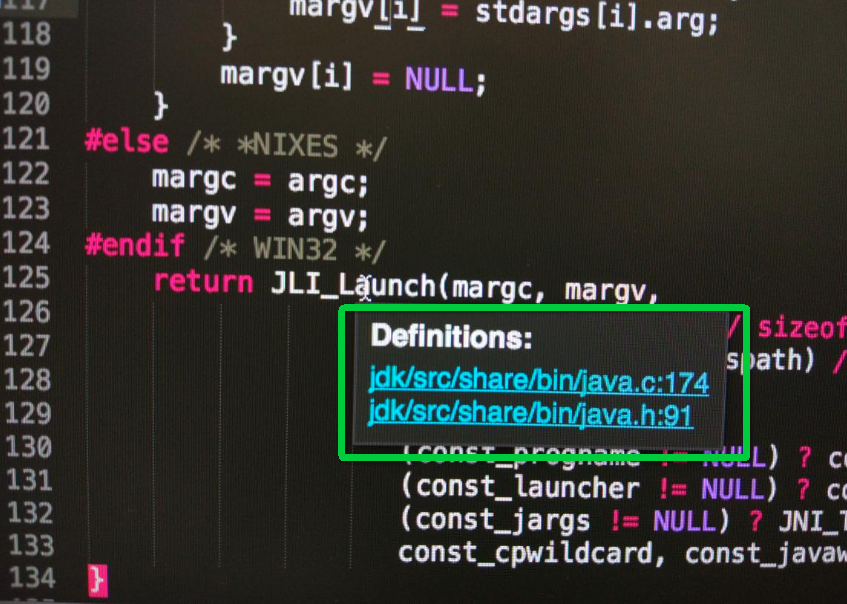

原文连接:https://www.cnblogs.com/bolingcavalry/p/11495456.html
在上一章《在docker上编译openjdk8》里，我们在docker容器内成功编译了openjdk8的源码，有没有读者朋友产生过这个念头：“能不能修改openjdk源码，构建一个与众不同的jdk“，今天我们就来阅读一些openjdk的源码，再尝试做些小改动并验证。
我们先编译openjdk：
首先通过命令git clone git@github.com:zq2599/centos7_build_openjdk8.git下载构建镜像所需的文件，下载后打开控制台进入centos7_build_openjdk8目录，执行
docker build -t bolingcavalryopenjdk:0.0.1 .这样就构建好了镜像文件，再执行启动docker容器的命令(命令中的参数“–security-opt seccomp=unconfined”有特殊用处，稍后会讲到)：
docker run --name=jdk001 --security-opt seccomp=unconfined -idt bolingcavalryopenjdk:0.0.1然后执行以下命令进入容器的控制台:
docker exec -it jdk001 /bin/bash进入容器的控制台后执行以下两个命令开始编译:
./configure --with-debug-level=slowdebug
make all ZIP_DEBUGINFO_FILES=0 DISABLE_HOTSPOT_OS_VERSION_CHECK=OK CONF=linux-x86_64-normal-server-slowdebug以上就是编译openjdk的步骤了，请大家开始编译吧，因为等会儿会用到，我们要用编译好的jdk做调试。
现在开始看源码吧，本次分析的目标是针对我们熟悉的java -version命令，当我们在终端敲下这个命令的时候，jvm到底做了些什么呢？
整个分析验证的流程是这样的：
准备工作：
在容器内通过vim看源码是很不方便的，所以我这里是在电脑上复制了一份openjdk的源码(下载地址：http://www.java.net/download/openjdk/jdk8/promoted/b132/openjdk-8-src-b132-03_mar_2014.zip
)，用sublime text3打开openjdk源码，真正到了要修改的时候再去docker容器里通过vi修改。
寻找程序入口
第一步就是把程序的入口和源码对应起来，先要找到入口main函数，步骤如下：
- 在docker容器内的/usr/local/openjdk/build/linux-x86_64-normal-server-slowdebug/jdk/bin目录下，执行命令以下命令可以进入GDB的命令行模式：
gdb --args ./java -version效果如下图，可以看到已进入GDB命令行模式，可以继续输入GDB命令了：
输入b main命令，在main函数打断点，此时GDB会返回断点位置的信息，如下图，main函数的位置在/usr/local/openjdk/jdk/src/share/bin/main.c, line 97:
再输入l命令可以打印源码，如下图：
在容器外的电脑上，通过sublime text3或者其他ide打开main.c，如下图，开始读代码吧：
4.png)
顺序阅读代码
main函数中的代码并不多，但有几个宏定义会扰乱我们思路，从字面上看#ifdef _WIN32这样的宏应该是windows平台下才会生效的，但总不能每次都靠字面推断，此时打断点单步执行是最直接的方法，但是在打断点之前，我们先解决前面遗留的一个问题吧，此问题挺重要的：
还记得我们启动docker容器的命令么：
docker run --name=jdk001 --security-opt seccomp=unconfined -idt bolingcavalryopenjdk:0.0.1命令中的–security-opt seccomp=unconfined参数有什么用？为何要留在打断点之前再次提到这个参数？
这个参数和Docker的安全机制有关，具体的文档链接在这里，请读者们自行参悟，本人的英文太差就不献丑了，简单的说就是Docker有个Seccomp filtering功能，以伯克莱封包过滤器（Berkeley Packet Filter，缩写BPF）的方式允许用户对容器内的系统调用（syscall）做自定义的“allow”, “deny”, “trap”, “kill”, or “trace”操作，由于Seccomp filtering的限制，在默认的配置下，会导致我们在用GDB的时候run失败，所以在执行docker run的时候加入–security-opt seccomp=unconfined这个参数，可以关闭seccomp profile的功能；
我之前不知道seccomp profile的限制，用命令docker run –name=jdk001 -idt bolingcavalryopenjdk:0.0.1启动了容器，编译可以成功，但是在用GDB调试的时候出了问题，如下图：

上图中，黄框中的“进入GDB”和“b main”(添加断点)两个命令都能正常执行，但是红框中的”r”(运行程序)命令在执行的时候提示错误“Error disabling address space randomization: Operation not permitted”，在执行”n”(单步执行)命令的时候提示程序不在运行中。
遗留问题已经澄清，可以继续跟踪代码了，之前我们已经在GDB输入了”b mian”，给main函数打了断点，现在输入”r”开始执行，然后就会看到main函数的断点已经生效，输入”n”可以跟踪代码执行到了哪一行，如下图：

原来代码执行的位置分别是97,122,123,125这四行，和下图的源码完全对应上了：
有了GDB神器，可以愉快的阅读源码了：
main.c的main函数中，调用JLI_Launch函数，在Sublime text3中，将鼠标放置在”JLI_Launch”位置，会弹出一个小窗口，上面是JLI_Launch函数的声明和定义的两个链接，如下图:

点击第一个链接，跳转到JLI_Launch函数的定义位置：
//根据环境变量初始化debug标志位，后续的日志是否会打印靠这个debug标志控制了
InitLauncher(javaw);
//如果设置了debug，就会打印一些辅助信息
DumpState();
if (JLI_IsTraceLauncher()) {
int i;
printf("Command line args:\n");
for (i = 0; i < argc ; i++) {
printf("argv[%d] = %s\n", i, argv[i]);
}
AddOption("-Dsun.java.launcher.diag=true", NULL);
} //如果设置debug标志位，就打印命令行参数，并加入额外参数
//选择jre版本，在jar包的manifest文件或者命令行中都可以对jre版本进行设置
SelectVersion(argc, argv, &main_class);
/*
设置一些参数，例如jvmpath的值被设置成jdk所在目录下的“lib/amd64/server/l”子目录，再加上宏定义JVM_DLL的值"libjvm.so"，即：/usr/local/openjdk/build/linux-x86_64-normal-server-slowdebug/jdk/lib/amd64/server/libjvm.so
*/
CreateExecutionEnvironment(&argc, &argv,
jrepath, sizeof(jrepath),
jvmpath, sizeof(jvmpath),
jvmcfg, sizeof(jvmcfg));
//记录加载libjvm.so的起始时间，在加载结束后可以得到并打印出加载libjvm.so的耗时
ifn.CreateJavaVM = 0;
ifn.GetDefaultJavaVMInitArgs = 0;
if (JLI_IsTraceLauncher()) {
start = CounterGet();
}
//加载/usr/local/openjdk/build/linux-x86_64-normal-server-slowdebug/jdk/lib/amd64/server/libjvm.so
if (!LoadJavaVM(jvmpath, &ifn)) {
return(6);
}
if (JLI_IsTraceLauncher()) {
end = CounterGet();
}
JLI_TraceLauncher("%ld micro seconds to LoadJavaVM\n",
(long)(jint)Counter2Micros(end-start));
++argv;
--argc;
if (IsJavaArgs()) {
/* Preprocess wrapper arguments */
TranslateApplicationArgs(jargc, jargv, &argc, &argv);
if (!AddApplicationOptions(appclassc, appclassv)) {
return(1);
}
} else {
//classpath处理
/* Set default CLASSPATH */
cpath = getenv("CLASSPATH");
if (cpath == NULL) {
cpath = ".";
}
SetClassPath(cpath);
}
//解析命令行的参数
if (!ParseArguments(&argc, &argv, &mode, &what, &ret, jrepath))
{
return(ret);
}到这里先不要继续往下读，我们进ParseArguments函数中去看看：
如上图红框所示，解析到”-version”参数的时候，会将printVersion变量设置为JNI_TRUE并立即返回。
继续阅读JLI_Launch函数：
//如果有-jar参数，就会根据参数设置classpath
if (mode == LM_JAR) {
SetClassPath(what);
}
//添加一个用于HotSpot虚拟机的参数"-Dsun.java.command"
SetJavaCommandLineProp(what, argc, argv);
/* Set the -Dsun.java.launcher pseudo property */
//添加一个参数-Dsun.java.launcher=SUN_STANDARD，这样JVM就知道是他的创建者的身份
SetJavaLauncherProp();
//获取当前进程ID，放入参数-Dsun.java.launcher.pid中，这样JVM就知道是他的创建者的进程ID
SetJavaLauncherPlatformProps();
return JVMInit(&ifn, threadStackSize, argc, argv, mode, what, ret);接下来在JVMInit函数中，ContinueInNewThread函数中会调用ContinueInNewThread0函数，并且把JavaMain函数做为入参传递给ContinueInNewThread0，ContinueInNewThread0的代码如下：
//如果指定了线程栈的大小，就在此设置到线程属性变量attr中
if (stack_size > 0) {
pthread_attr_setstacksize(&attr, stack_size);
}
//创建线程，外部传入的JavaMain也在此传给子线程，子线程创建成功后，会先执行JavaMain(也就是continuation参数)
if (pthread_create(&tid, &attr, (void *(*)(void*))continuation, (void*)args) == 0) {
void * tmp;
//子线程创建成功后,当前线程在此以阻塞的方式等待子线程结束
pthread_join(tid, &tmp);
rslt = (int)tmp;
} else {
/*
* Continue execution in current thread if for some reason (e.g. out of
* memory/LWP) a new thread can't be created. This will likely fail
* later in continuation as JNI_CreateJavaVM needs to create quite a
* few new threads, anyway, just give it a try..
*/
//若创建子线程失败，在当前线程直接执行外面传入的JavaMain函数
rslt = continuation(args);
}
//不再使用线程属性，将其销毁
pthread_attr_destroy(&attr);在阅读ContinueInNewThread0函数源码的时候遇见了下图红框中的注释，这是我见过的最优秀的注释（仅代表个人见解）,当我看到pthread_create被调用时就在想“创建线程失败会怎样？”，然后这个注释出现了，告诉我“如果因为某些原因（例如内存溢出）导致创建线程失败，当前线程还会继续执行JavaMain，但是在后续的操作中依然有可能发生错误，例如JNI_CreateJavaVM函数会创建一些新的线程，因此，在当前线程执行JavaMain只是做一次尝试”。
在恰当的位置将问题说清楚，并对后续发展做适当的提示，好的代码加上好的注释真是让人受益匪浅。
接着上面的分析，在新的线程中JavaMain函数会被调用，这个函数内容如下：
//windows和linux下，RegisterThread是个空函数，mac有实现
RegisterThread();
//记录当前时间，统计JVM初始化耗时的时候用到
start = CounterGet();
//调用libjvm.so库中的CreateJavaVM方法初始化虚拟机
if (!InitializeJVM(&vm, &env, &ifn)) {
JLI_ReportErrorMessage(JVM_ERROR1);
exit(1);
}
//调用java类的静态方法(sun.launcher.LauncherHelper.showSettings)，打印jvm的设置信息
if (showSettings != NULL) {
ShowSettings(env, showSettings);
CHECK_EXCEPTION_LEAVE(1);
}
/*
调用java类的静态方法(sun.misc.Version.print)，打印：
1.java版本信息
2.java运行时版本信息
3.java虚拟机版本信息
*/
if (printVersion || showVersion) {
PrintJavaVersion(env, showVersion);
CHECK_EXCEPTION_LEAVE(0);
if (printVersion) {
LEAVE();
}
}读到这里可以不用读后面的代码了，因为printVersion变量为true，所以在执行完PrintJavaVersion后，会调用LEAVE()函数使虚拟机与当前线程分离，然后就是线程结束，进程结束。
此时，我们应该聚焦PrintJavaVersion函数，来看看平时执行”java -version”的内容是怎么产生的。
进入PrintJavaVersion函数，内容并不多，但能学到c语言的jvm是如何执行java类中的静态方法的，如下：
static void
PrintJavaVersion(JNIEnv *env, jboolean extraLF)
{
jclass ver;
jmethodID print;
//从bootStrapClassLoader中查找sun.misc.Version
NULL_CHECK(ver = FindBootStrapClass(env, "sun/misc/Version"));
/*
由于命令行参数中没有-showVersion参数，所以extraLF不等于JNI_TRUE,所以此处调用的是sun.misc.Version.print方法,如果命令是"java -showVersion"，那么调用的就是pringlin方法了
*/
NULL_CHECK(print = (*env)->GetStaticMethodID(env,
ver,
(extraLF == JNI_TRUE) ? "println" : "print",
"()V"
)
);
(*env)->CallStaticVoidMethod(env, ver, print);
}读到这里，本次阅读源码的工作似乎要结束了，但事情没那么简单，读者们请在openjdk文件夹下搜索Version.java文件，虽然能搜到几个Version.java，可是包路径符合sun/misc/Version.java的文件只有一个，而这个Version.java的上层目录是test目录，不是src目录，显然只是测试代码，并不是上面的PrintJavaVersion函数中调用的Version类：
11.png)
现在问题来了，真正的Version类到底在哪呢？
刚才搜索Version.java文件的时候，我们搜的是下载openjdk源码解压之后的文件夹，现在我们回到docker容器中的/usr/local/openjdk目录下，输入find ./ -name Version.java试试，结果如下图，在build目录下，发现了四个sun/misc/Version.java文件：
在上图中，sun/misc/Version.java文件一共有四个，后三个Version.java文件的路径中带有get_profile_1，get_profile_2这类的路径，此处猜测是在某些场景或者设置的前提下才会产生(实在对不起各位读者，这是我的猜测，具体原因至今还么搞清楚，有知道的请告诉一些，谢谢啦)，所以这里我们还是聚焦第一个文件吧：
/usr/local/openjdk/build/linux-x86_64-normal-server-slowdebug/jdk/gensrc/sun/misc/Version.java
Version.java这个文件，在下载的源码中没有，而编译成功后的build目录下却有，并且文件的路径中有gensrc这个目录，显然是在编译过程中产生的，好吧，我们从Makefile中去寻找答案去：
在Makefile文件中，会调用Main.gmk，如下图：
Main.gmk中会调用BuildJdk.gmk，如下图：
BuildJdk.gmk中会调用GenerateSources.gmk，如下图：
GenerateSources.gmk中会调用GensrcMisc.gmk，如下图：
打开GensrcMisc.gmk文件后，一切都一目了然了，如下图中的代码所示，以/src/share/classes/sun/misc/Version.java.template文件作为模板，通过sed命令将Version.java.template文件中的一些占位符替换成已有的变量，替换了占位符之后的文件就是Version.java
我们可以看到一共有五个占位符被替换：
@@launcher_name@@ 替换成 $(LAUNCHER_NAME)
@@java_version@@ 替换成 $(RELEASE)
@@java_runtime_version@@ 替换成 $(FULL_VERSION)
@@java_runtime_name@@ 替换成 $(RUNTIME_NAME)
@@java_profile_name@@ 替换成 $(call profile_version_name, $@)先看看Version.java.template中是什么：
果然有五个占位符，然后有个静态方法public static void init()，里面把占位符对应的内容设置到全局属性中去了。
终于搞清楚了，原来Version.java源自Version.java.template文件，在编译构建的时候被生成，生成的时候Version.java.template文件中的占位符被替换成对应的变量。
现在，在docker容器里，执行命令vi /usr/local/openjdk/build/linux-x86_64-normal-server-slowdebug/jdk/gensrc/sun/misc
，打开Version.java看看吧，如下图：
果然全部被替换了，再配合static代码块中的init方法，也就意味着这个类被加载的时候，应用就有了这三个全局的属性：java.version，java.runtime.version，java.runtime.name
搞清楚了Version.java的来龙去脉，还剩一个小问题要搞清楚，在GensrcMisc.gmk文件中，用sed命令替换Version.java.template文件中的占位符的时候，那些用来替换占位符的变量是哪里来的呢？或者说Version.java文件中java_version =”1.8.0-internal-debug”，java_runtime_name =”OpenJDK Runtime Environment”，java_runtime_version = “1.8.0-internal-debug-_2017_04_21_04_39-b00”这些表达式中的和”1.8.0-internal-debug”，“OpenJDK Runtime Environment””，“1.8.0-internal-debug-_2017_04_21_04_39-b00”究竟来自何处？
这时候最简单的办法就是用”RELEASE”,”FULL_VERSION”,”RUNTIME_NAME”去做全局搜索，很快就能查出来，我这来梳理一下吧：
openjdk/configure文件中调用common/autoconf/configure
common/autoconf/configure中调用autogen.sh
autogen.sh中有如下操作：
把configure.ac中的内容做替换后输出到generated-configure.sh，其中用到了autoconfig做配置
configure.ac中调用basics.m4
basics.m4中调用spec.gmk.in
spec.gmk.in中明确写出了JDK_VERSION，RUNTIME_NAME这些变量的定义，如下图：
PRODUCT_NAME和PRODUCT_SUFFIX是autoconfig的配置项，在openjdk/common/autoconf/version-numbers文件中定义，这是个autoconfig的配置文件，如下图：
变量的来源梳理完毕，接着看代码吧，sun.misc.Version类的print方法，如下图，一如既往的简答明了，将一些全局属性取出然后打印出来：
至此，java -version命令对应的源码分析完毕，简答的总结一下，就是入口的main函数中，通过调用java的Version类的print静态方法，将一些变量打印出来，这些变量是通过autoconfig输出到自动生成的java源码中的；
既然已经读懂了源码，现在该亲自动手实践一下啦，这里我们做两个改动，记得是在docker容器中用vi工具去改：
修改Version.java.template文件，让java -version在执行的时候多输出一行代码，如下图红框位置：
修改/usr/local/openjdk/common/autoconf/version-numbers，修改PRODUCT_SUFFIX的值，根据之前的理解，PRODUCT_SUFFIX修改后，输出的runtime name会有变化，改动如下：
改动完毕，回到/usr/local/openjdk目录下，执行下面两行命令，开始编译：
./configure --with-debug-level=slowdebug
make all ZIP_DEBUGINFO_FILES=0 DISABLE_HOTSPOT_OS_VERSION_CHECK=OK CONF=linux-x86_64-normal-server-slowdebug编译结束后，去/usr/local/openjdk/build/linux-x86_64-normal-server-slowdebug/jdk/bin目录执行./java -version，得到的输出如下图，可以看到我们的改动已经生效了
至次，本次阅读，修改，调试和编译openjdk8的实践就结束了，其实JavaMain函数做了很多事情，这次只是看到其中打印信息的那一部分而已，后面的加载class，执行java类等都还没有看到，有兴趣的读者可以先对java的类加载做个初步了解，再继续阅读JavaMain函数，相信您会有更多收获的。
欢迎关注我的公众号
27.png)